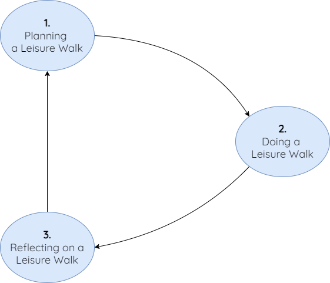

Context
Existing leisure walking route recommenders have limited context and understanding of the user, investigating these challenges the PhD looks to design a framework for curating personalised leisure walking route experiences.
The framework for curating personalised leisure walking experiences represents a four-year multidisciplinary project investigating how leisure walking recommendations can be improved through an understanding of the user. The research first explores a grounded understanding of walking through a behaviour survey, expert interview, and a think-aloud study. Building on this knowledge the PhD then explores the design of a Leisure Walking Framework representing the planning, doing, and reflecting tasks.
Using the framework and knowledge gained, several tools were produced to support users in curating personalised leisure walking experiences. The demonstrator systems were then tested to support the evaluation of the project. The results of the project highlight the implementation of new technologies for curating personalised walking experiences, supporting user expertise in curating new walks.
Timeline
2020 - 2024
Researchers
James Williams
Supervised by: James Pinchin, Adrian Hazzard, Gary Preistnall, Sarah Sharples, Stefano Cavazzi, Lee Newton
Affiliation
EPSRC Horizon Centre for Doctoral Training and Nottingham Geospatial Institute at the University of Nottingham
Acknowledgements
This work was supported by the Engineering and Physical Sciences Research Council [grant number EP/S023305/1] and by Ordnance Survey.
1 Understanding the User
To form an understanding as to how, when, and where individuals engage with leisure walking routes.
Understanding the Data
To investigate the collected data and formulate a framework with related datasets for personalising leisure walking experiences.
Design and Test
To design and test a demonstrator system of the framework for curating personalised leisure walking experiences.
Project Overview
Leisure walking is an activity that can encompass a range of rationales for walking, this may include walking for exercise, relaxation, or active travel. To discover new or interesting routes, users may look to use navigation tools, online search, or local knowledge to formulate and plan new leisure walks that they have an interest in. These navigation systems are often built to aid routing between different and unfamiliar locations; however, only limited attempts have investigated such navigation methods beyond that of specific contextual characteristics or point-to-point routing. The limited subjective, contextual, and rich information about leisure walking routes provides the impetus for the research performed as part of this PhD.
The research first investigates how users engage with leisure walking through capturing rich results from a leisure walking behaviour survey and a think aloud verbal protocol study, mapping this alongside expert interviews. A framework for curating personalised leisure walking experiences is then be designed and proposed, based upon the results of the qualitative aspect of the work. Finally, the research investigates the data generated, how this data can be curated, stored, represented, and demonstrated in a route curation system. The research project sought to provide more contextually relevant, interesting, and experiential leisure walking routes through the framework and tools, which will also support the development of more relevant and useful route recommendation systems for users.
Studies and Highlights
Three user studies were conducted to support the capture of new information about leisure walking, the studies are defined as follows:
- Leisure Walking Behaviour Survey: The first study of the PhD captured self-reported behaviours and perspectives on leisure walking through an online survey. The survey captured leisure walking behaviour patterns and supported an emerging understanding of what leisure walking is.
- Think-Aloud Study: The think-aloud study provided participants with a Go Pro camera and a GPS tracker to capture a rich understanding about leisure walking. The study supported an enhanced understanding of what walkers were interested in and the personal nature of leisure walking.
- Expert Interviews: Expert interviews were conducted through online meetings. The interviews captured an understanding of the data and challenges of implementing leisure walking systems. The study also revealed expert perspectives on route curation and personalisation.
Based on these initial studies a framework representing the planning, doing, and reflecting on a leisure walk was formed. These tasks represent the high-level overview of the understanding of leisure walking formed during the initial grounded theory studies. Each task has related activities, influences, and properties showcasing different levels of detail. The framework is iterative and can be presented as follows:
Using the designed Leisure Walking framework several demonstrator tools were developed, this included a command line interface for generating and integrating characteristic grids, a web-based user interface for users to curate routes using, and a routing engine that can be layered onto existing routing networks. Using these tools an evaluation of the research could be completed, finding the framework and demonstrator approach to be effective at matching a user's local knowledge of an area.
Future Work
Future work (See LWSWG) will initially explore the impact of the project in public, private, and third-sector contexts, seeking to better understand the impact of the work beyond an academic setting. Continued research could now look to investigate the presentation of dynamic and personalised routes to end users and integrate more datasets relating to the Leisure Walking Framework. The Leisure Walking Framework could also be explored further, where future research could investigate other contextual challenges in outdoor activities. Several implementation challenges were also found during the evaluation, requiring further focus in route curation systems.